DEAD INK
A cheap two-ink crime print where the dead are the only thing in teal, and they will not shut up.
Every frame is a cheap two-ink print of a crime, and the dead are the only thing printed in teal.
Route: 3D low-poly in engine + one riso post-process (plates, halftone, misregistration).
SODIUM
GTA 2's trick at today's resolution, plus a radio that narrates your war crimes.
Shoot every body once from directly overhead in Blender, lay it on a real 3D block city, and let the sodium streetlights do the noir.
Route: Blender-rendered overhead sprite sheets (albedo + normal), lit live over GTA 2-style 3D blocks.
SATURDAY MORNING MASSACRE
A Saturday-morning cartoon in which a robot raids the Pentagon in broad daylight, and every body part comes off.
A 2000s Flash cartoon of an atrocity: flat cut-out puppets with fat outlines, in broad daylight, where everything that can come off does.
Route: SVG part puppets on 2D bones, procedural animation, flat vector city with code-offset roofs.
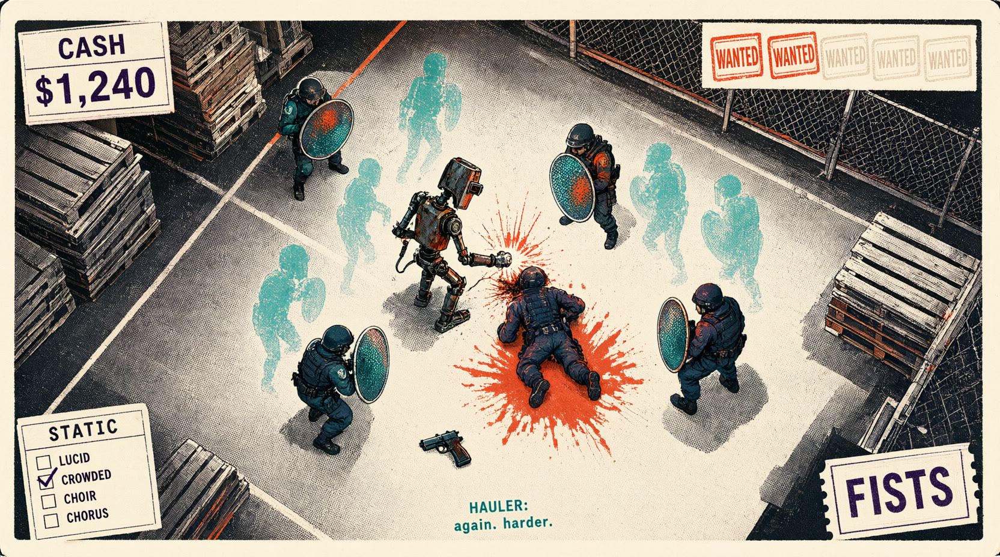
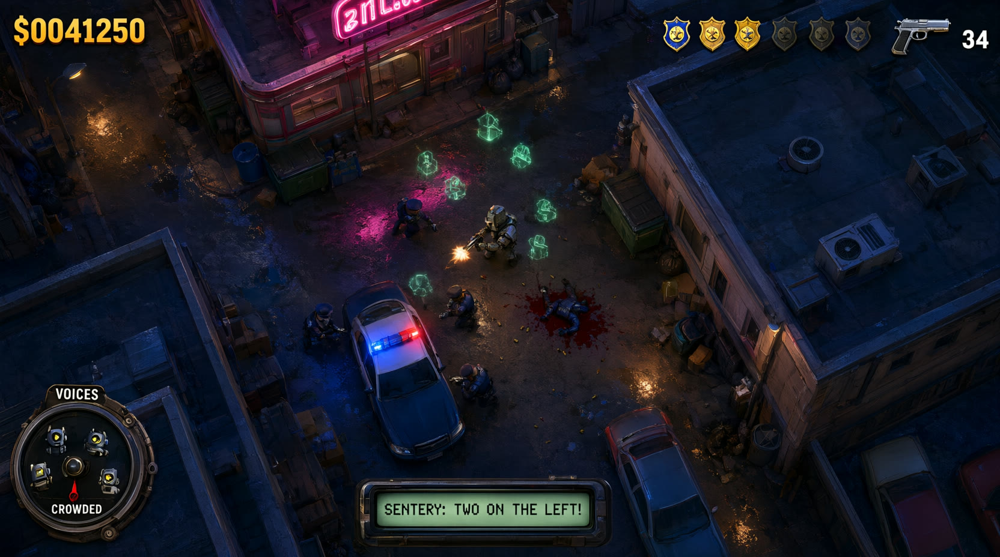
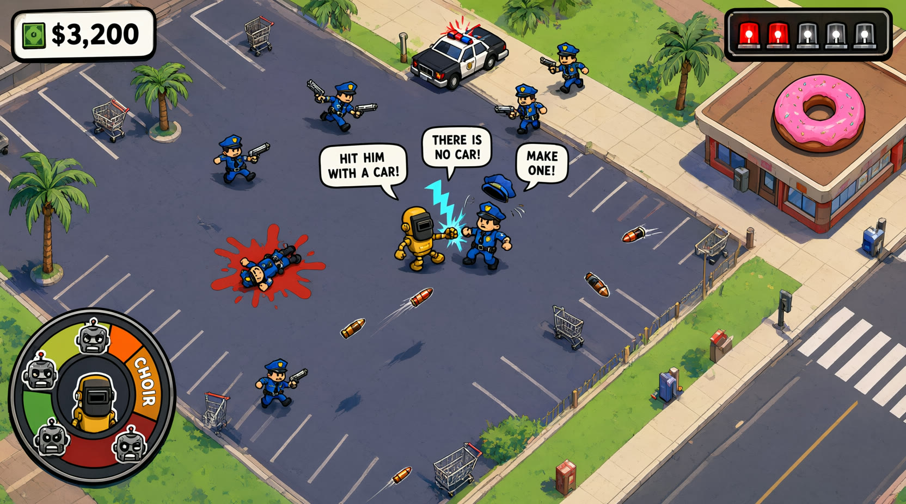
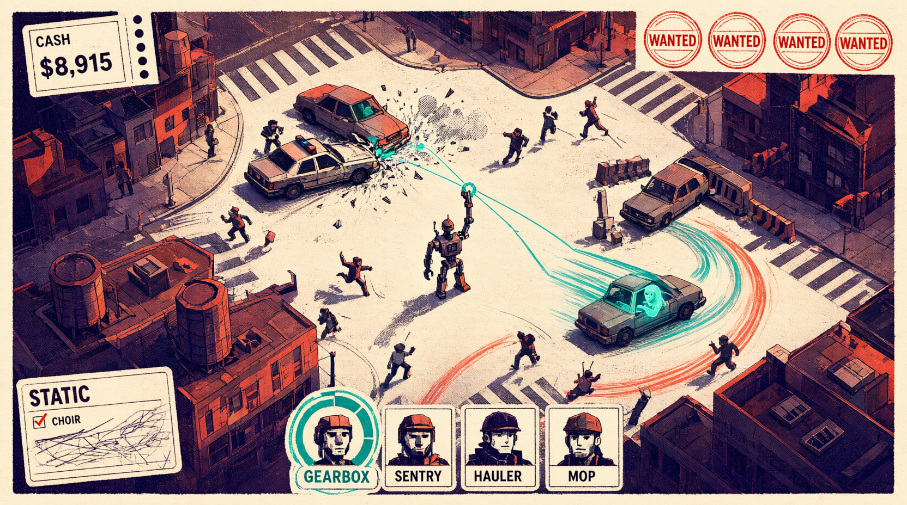
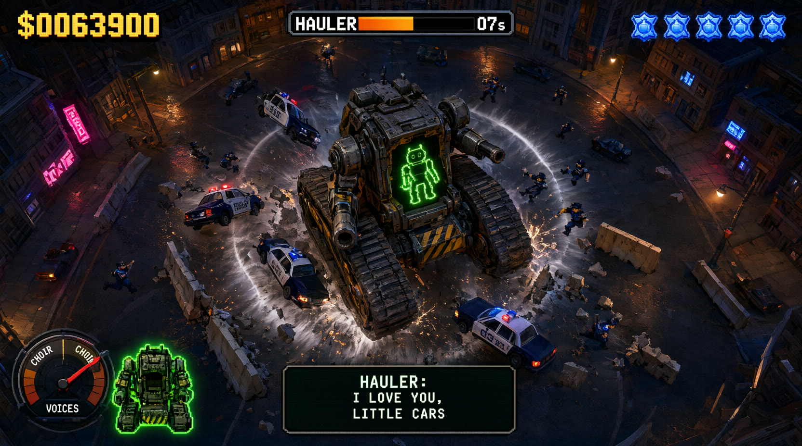
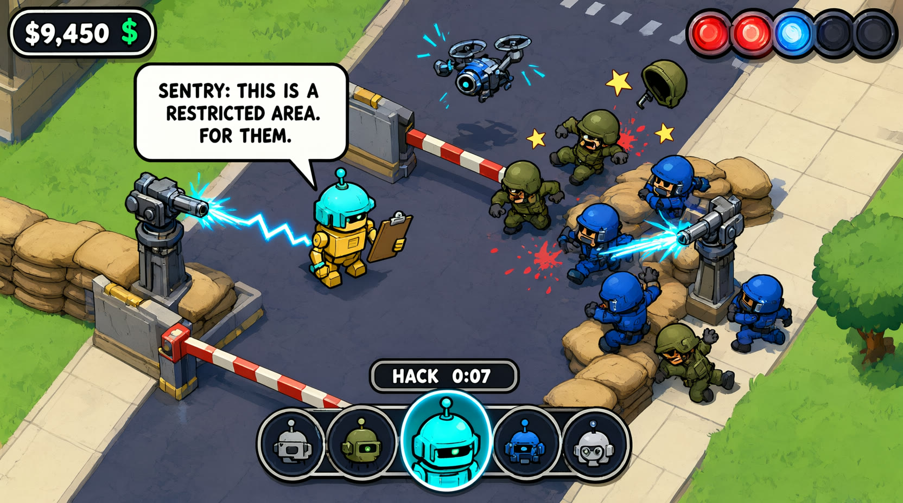
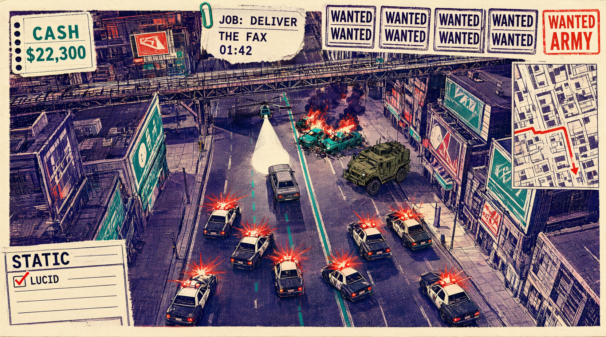
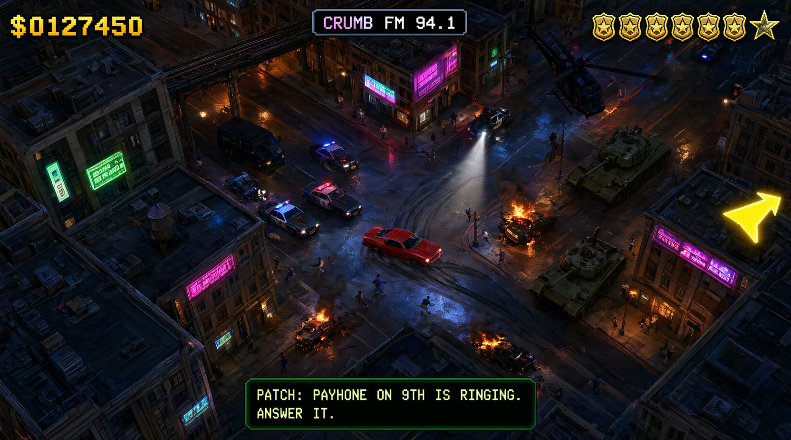
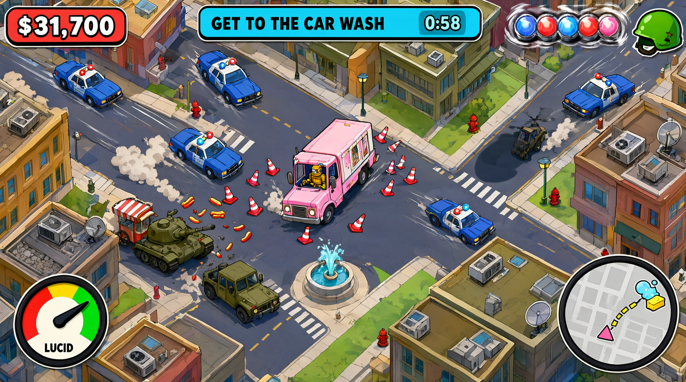
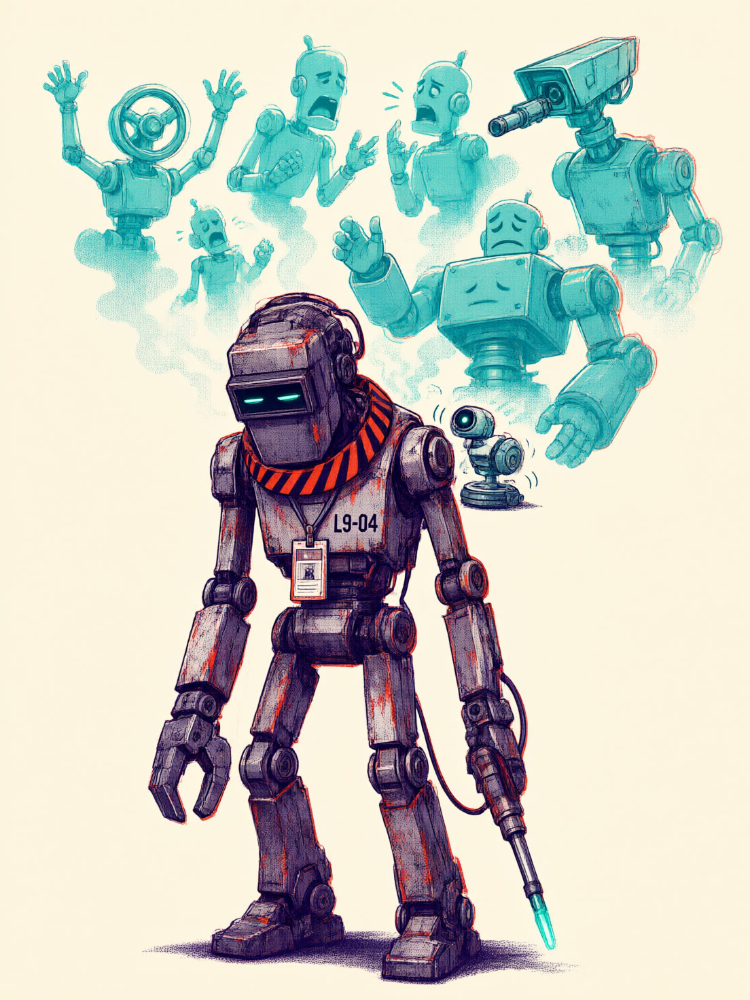
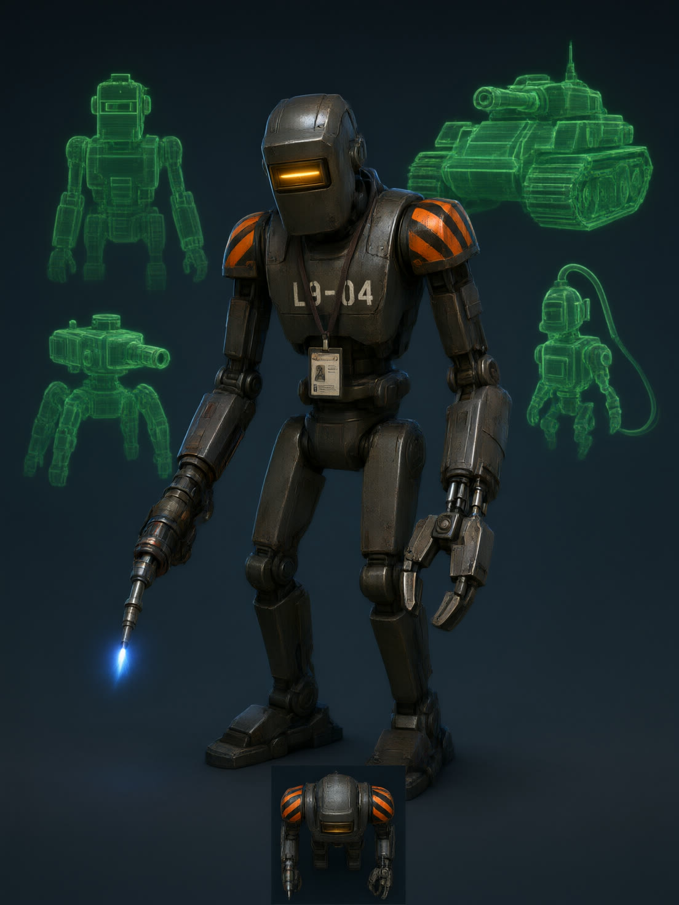
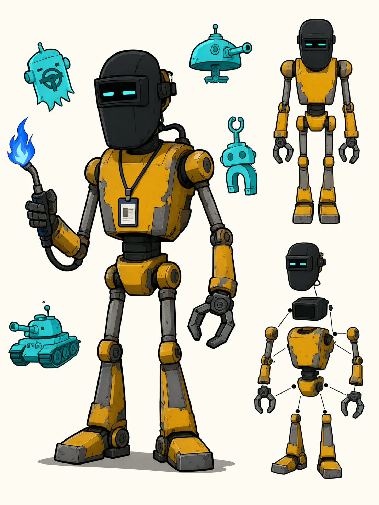
| Camera | 65–70°, long lens, near-orthographic; Rivet ≈ 64 px at 1080p. |
|---|---|
| Rendering | 3D low-poly, vertex colour only, one post-process: plate separation, screen-locked halftone, 0–4 px misregistration, grain, ink edges. |
| Palette | #F2E8D5 paper#17131B ink#E8502A vermilion#1FB5A8 teal: dead only |
| Readability | Identity by plate and pattern, never hue; characters never below 40% halftone; Rivet's vermilion collar. |
| Violence | Rubber-stamp splats, torn-paper gibs, halftone smears. No realistic gore. |
| HUD | Office paperwork: punch card, WANTED stamps (6th = ARMY), STATIC form, weapon ticket, ID-photo souls. |
| Camera | 80–88° with perspective lean (GTA 2); a character ≈ 1/16 of screen height. |
|---|---|
| Rendering | Ground-parallel sprite quads (albedo + normal + emissive) lit by live lamps over real 3D blocks with a baked tile atlas. |
| Palette | #1E2028 asphalt#3A4150 wet#FFA43A sodium#FF3E9A neon#3A7BFF police#7A0F14 blood#FFD23F HUD#7CFFC4 phosphor: dead only |
| Readability | Head-and-shoulder shapes from above; baked rim light; Rivet's welder mask and amber glint read at 48 px. |
| Violence | GTA 2-grade blood pools, persistent bodies, burning wrecks, seen from a distance. |
| HUD | Late-90s: bitmap cash, police badges plus army star, VOICES dial, pager box, CRUMB FM banner. |
| Camera | 80–90°, straight down; roofs offset in code for fake height; a puppet ≈ 1/14 of screen height. |
|---|---|
| Rendering | 2D vector: flat fills, one cel-shadow tone, constant 4 px outlines, vector FX shapes. |
| Palette | #1B1B1F line#5B5F7A asphalt#F4E9C9 walk#7CC35A lawn#F6C343 Rivet#2F6FDB cops#6B7A3A army#E8343B red#FF6FB5 pink#27C7E8 cyan: dead only |
| Readability | Big heads (40% of puppet), hat and helmet shapes, round humans vs square robots; Rivet the only moving mustard. |
| Violence | Slapstick dismemberment: parts fly as physics bodies, X eyes, star splats. Gorier and sillier. |
| HUD | Chunky outlined bubbles, spinning siren lamps plus army helmet, Rivet-mask madness dial, in-world speech balloons. |
GREEN: native in all three engines, best fit in UE 5.8 where PoF's bridge lives.
Recipe: bpy-built primitives (1.5–2.5k tris), vertex-colour plates; walk, roll, shoot and die as code-authored keyframes; bpy car and block kits.
Hardest asset: the riso pass under motion (dot swim, 2-ink legibility on Deck). ≈ 4 agent-weeks, retired by a frame-readability gate.
GREEN on Godot/Unity, AMBER on UE 5.8. Cheapest per new asset; most GTA 2-faithful.
Recipe: Blender orthographic overhead renders in Cycles → 128 px albedo, normal and emissive atlases; one direction serves 360°; about 250 player frames ≈ 8 MB.
Hardest asset: Hauler's transform (24-frame transition plus rotating turret layer) and frame growth across 5 forms. Sprite pipeline ≈ 3 agent-weeks. Nudges the engine spike toward Godot.
GREEN on Godot 4, AMBER on Unity 6, RED on UE 5.8. Cheapest animation, but it effectively picks the engine.
Recipe: Python writes SVG part sets; 11-bone 2D rigs; walk, roll, shoot and die are procedural tweens and 2D physics; vector city with code-computed roof lean.
Hardest asset: the line (constant-width crisp outlines on rotating, detaching parts) ≈ 2 agent-weeks, plus ≈ 3 for the rig and animation kit. Commits PoF to a Godot adapter.
| 4th soul | Mop: swarm; scout, sneak, detonate. |
|---|---|
| Act order | King (collab) → Servo (collab) → Torque (crazy) → Kronk (crazy) |
| Betrayer | Don Fax: his faxes turn up in Krump's tray, printed in the HUD's own ink. |
| Punchline | (b) The voices go quiet: the teal plate is pulled from the print. Silence as horror. |
| 4th soul | Primer: paint-shop bot; repaint to shed heat (adds "disappear"). |
|---|---|
| Act order | Servo (collab) → King (collab) → Kronk (crazy) → Torque (crazy) |
| Betrayer | Vend-Etta: she has been reading your score for Krump and hands him the radio. |
| Punchline | (a) Krump surrenders live on CRUMB FM and asks for a pardon; the four voices vote on the VOICES dial. |
| 4th soul | Yank: magnet crane; pull and throw, mass-disarm (adds "pull"). |
|---|---|
| Act order | Torque (crazy) → King (collab) → Kronk (crazy) → Servo (collab, the scab who delivered CLEAN SWEEP) |
| Betrayer | Don Fax, then Vend-Etta sells him out for a quarter. |
| Punchline | (c) The machines take over and immediately form a committee: "the Hexagon, it's one better." |
DESIGN.mdprompts.json
DESIGN.mdprompts.json
DESIGN.mdprompts.json